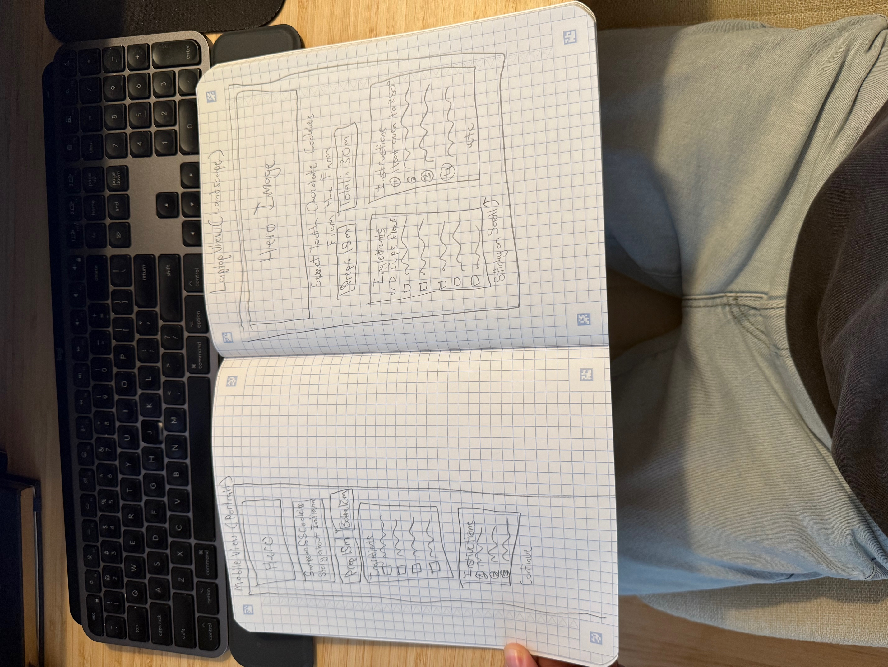
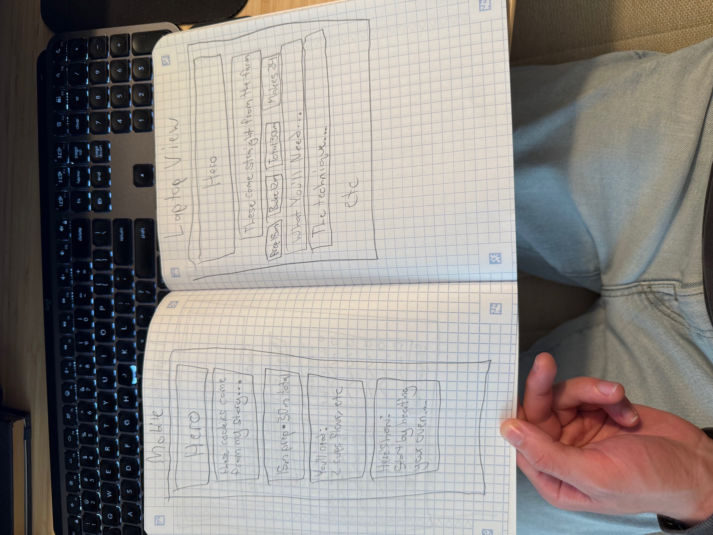
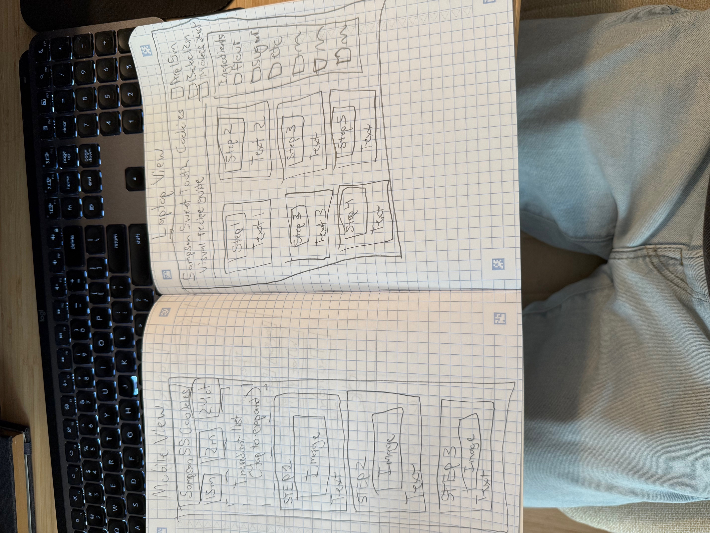

Project: Sampson Sweet Tooth Chocolate Chip Cookies
Three basic approaches exploring different visual arrangements
Mitchell J. Sampson
Concept: This format emphasizes a clear hierarchy: hero image at top, ingredients and instructions stacked vertically on mobile, sidebar layout on desktop. It's based on Joy Food Sunshine.
Key features: Mobile shows hero image, "Sampson SSC cookies" title, story text, prep/bake time boxes, ingredients checklist, and numbered instruction steps. Laptop uses two-column layout with ingredients sidebar (left) and instructions (right), with sticky-on-scroll planned.
Concept: This design emphasizes personal connection to Brazil, Indiana. The recipe will flow as a narrative with integrated ingredients and instructions in paragraph form. It's inspired by Medium's text-based design.
Key features: Mobile shows hero image, story text "These come straight from the farm," time stats (15m prep, 30m total), "You'll need:" section with ingredients in sentence form, and "Here's how:" narrative instructions. Laptop displays full-width hero at top with title overlay, stat boxes (Prep/Bake/Total/Makes), sections for "What You'll Need" and "The technique" with text explanations.
Concept: Process photography as primary navigation. Each step shown as a card with image placeholder and brief text. It's optimized for quick glances while cooking.
Key features: Mobile displays title "Sampson SS Cookies," three time stat boxes (15m/12m/24hr), ingredients list, and vertical cards for each step with image placeholder and text. Laptop shows title "Sampson Sweet Tooth Cookies - Visual Recipe Guide," time stats, and grid of step cards (Step 1-5) with images and text labels, plus ingredients checklist sidebar on right with checkboxes for Prep/Bake/Makes/Flour/Sugar/Etc.
